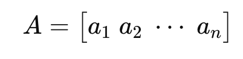
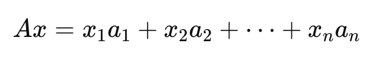
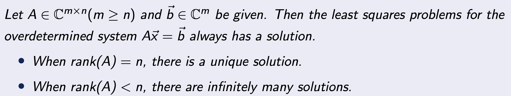
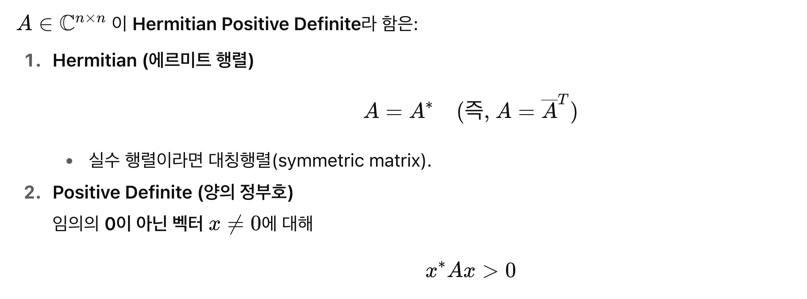
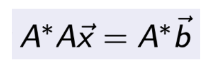

다시 우리가 무엇을 하고 있는 지를 짚고 넘어가자.
우리는 밑의 선형 행렬방정식을 풀고자 한다.
Linear Matrix Equation.

실제 공학문제에서 A는 1 million x 1 million 의 dimension을 가지기 때문에,
연산이 굉장히 오래걸리므로, 컴퓨터로 연산해야한다.
하지만, floating problem (컴퓨터에서 저장할 수 있는 소숫점 자리수의 한계)
로 인해서 딱 정확한 해를 구하기는 어렵다.
따라서, 우리는 위 방정식의 Error를 r벡터로 표기하고,
r의 norm을 최소화하는 문제로 전환한다.

위 새롭게 정의된 문제가 바로,
Least Square Problem이다.

위 문제를 우리가 지금까지 배웠던
Projection
의 개념을 이용해서,
재해석할 필요가 있다.
Ax = b를 다시 해석해보면,

range(A) 의 기저벡터들의 선형결합으로 b벡터를 표현하고 싶고,

그 선형결합 계수가 바로 x 벡터 라는것.

(굉장히 중요한 개념이다, 꼭 이해해야한다)
문제는
b가 range(A)위에 정확히 있지 않는 경우
가 문제이다.
그렇기 때문에 우리는
벡터 b를 range(A)에 Projection하여,
Pb로 강제로 Projection을 진행해준다.
(P는 이전시간에 배웠던, Projector)

즉, b를 range(A)위의 벡터와 그렇지 않은(orthogonal한)
벡터로 쪼개주고,

null(A) 에 존재하는 = range(A)에 Orthogonal 한 벡터를
Residual vector: r로 정의한다.

결국, Least Square Problem을 재해석하면,
"we wanna find the x that minimizes the Residual vector(r), which is orthogoanl to the range(A)"

수학적으로, r이 존재할 수 있는 공간을 정의해주자.
range(A)자 존재하는 space Cm안에 존재하는 subset : S라고 정의하면,
우리가 관심있는
subset은 Orthogonal to S

이제, 해의 갯수를 살펴보자.
linear algebra시간에 다루었다 싶이, rank(A)에 따라서
해가 유일히 존재하는지 수많이 존재하는 지를 우리는 알 수 있다.

여기서 재밌는 사실은
A를 Least Square Problem 양변에 곱해주면, 다음과 같이 식을 변형 할 수 있다.


이렇게 강제로 곱해준 이유는 바로,
Choleksy Factorization
을 사용할 수 있기 때문!.
(AA = RR )

AA = RR 로 되는 이유는????
어떤 다음과 같은 행렬이 있다고 하자.


위 행렬은 위와 같이 Right and Left triangular Matrix로 분해가 가능하다.
그렇다면 모든 행렬이 분해가 가능한게 아닐텐데???
어떤 녀석들만??? 바로
Hermitian Positive Definite Matrix

위 두가지 조건을 만족하는 모든 행렬은 분해가 가능하다는 것!!.
따라서, 우리가 A를 곱해준 이유는 바로,

AA가 무조건 Hermitian Positive semi Defintie Matrix이기 때문이다.
따라서, 강제로 Hermitian Positive Definite Matrix로 만들어주고,
Cholesky 분해로 간단한 R로 재 분해 해주어서,
풀기 쉬운 형태로 방정식을 만들어주는게, 아래알고리즘의 원리.

또 다른 방법으로는,
(normal Equation)
AA는 Positive Definite Matrix이므로 역행렬이 무조건 존재한다.
따라서, 우리가 다음과 같이 A+: Pseudoinverse of A 를 만들어 줄 수 있다

결국 우리가 풀고자 하는 문제를,
다음과 같이 재 표현 할수 있고 비교적 쉽게 x를 구할 수가 있다는 것.

=========================================
마지막으로, 큰 흐름을 이해가 넘어가자
우리는 밑의 선형 행렬방정식을 풀고자 한다.
그런데 실제로는 computational float문제, noise 문제로 인해서
Least square Problem으로 전환하였다.
여기서 문제를 보다 쉽게 풀기 위해 A = QR로 분해한후 위 문제를 해결 할수 있고,
혹은 Cholesky Factorization을 사용할 수 도 있다.

Normal equation method via Cholesky Factorizaiton.
(여기서 주의할 점은
A A 를 구성하는게,
numerical issue를 발생할 수 가 있다.
이런 경우는 QR 분해를 실행하는게 더 안정정.)
A A 를 구성하는게 Numerical error 가 증폭되는 A를
ill conditioned Matrix 라고 부르고,
이를 판단하는 기준이 바로 condition number
(추후에 자세히 다룰 예정)
또한,
A - sparse Matrix (요소에 0이 많이 존재하는 경우)
--> QR factorizaiton ( computational effective)